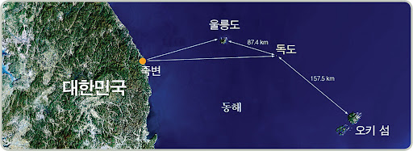

독도는 한국과 일본 사이의 영유권 분쟁 지역으로, 국제적으로 주목받고 있는 섬입니다. 한국은 독도에 대한 명확한 주권을 주장하며, 실효 지배를 하고 있습니다. 이에 반해 일본은 독도를 자국의 영토라고 주장하며, 두 나라 사이에 긴장이 고조되고 있습니다.
독도의 영유권 분쟁은 단순한 영토 문제를 넘어 역사적, 정치적, 경제적 요인이 얽혀 있는 복잡한 문제입니다. 한국은 독도가 역사적으로, 지리적으로, 국제법적으로 한국의 영토임을 입증하는 다양한 자료와 증거를 가지고 있습니다. 반면 일본은 독도에 대한 자국의 영유권 주장을 지속적으로 강화하고 있습니다.
국제사회에서는 독도 문제를 평화적으로 해결하기 위해 다양한 노력이 이루어지고 있습니다. 양국은 외교 채널을 통해 대화를 지속하고 있으며, 국제법을 통해 문제를 해결하려는 시도도 있습니다. 그러나 영유권 분쟁은 여전히 해결되지 않은 상태로, 동아시아 지역의 안보와 평화에 중요한 영향을 미치고 있습니다.